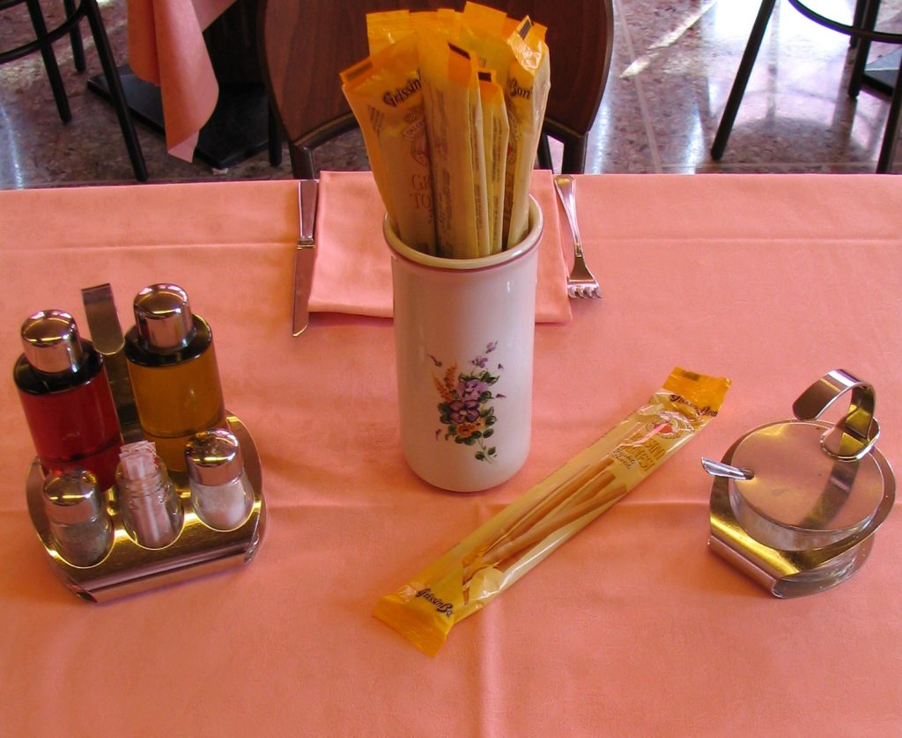

Photo by Paolo Tosolini
On every restaurant table you'll find a set of olive oil, vinegar, salt, pepper and toothpicks. Bread and grissini (special thin breadsticks) will already be on the table or come right after you order. If you order a primo, then some grated Parmesan cheese will be served. If the waiter doesn’t bring you the cheese it means that it doesn’t go with that particular dish. For example, Italians never put cheese on fish dishes. {This is an excerpt from chapter 3 “Italian cuisine” of the eBook “Italy from the Inside. A native Italian reveals the secrets of traveling in Italy”. To buy the eBook click here}